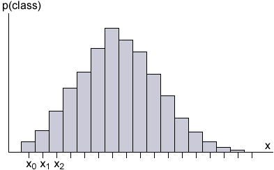

Discrete distributions are often summarised by their mean and variance.
\[ E[X] \;=\; \mu \;=\; \sum_{\text{all } x} {x \times p(x)} \] \[ \Var (X) \;=\; \sigma^2 \;=\; E \left[(X - \mu)^2 \right] \;=\; \sum_x (x - \mu)^2 \;p(x) \]The mean and variance of a continuous distribution are similar concepts.
We will define the mean and variance as integrals later in the e-book.
However these formal definitions also correspond to a sequence of histograms whose classes become narrower. The mean and variance are the limit of what would be found from discrete variables whose possible values were in the middle of the classes.
